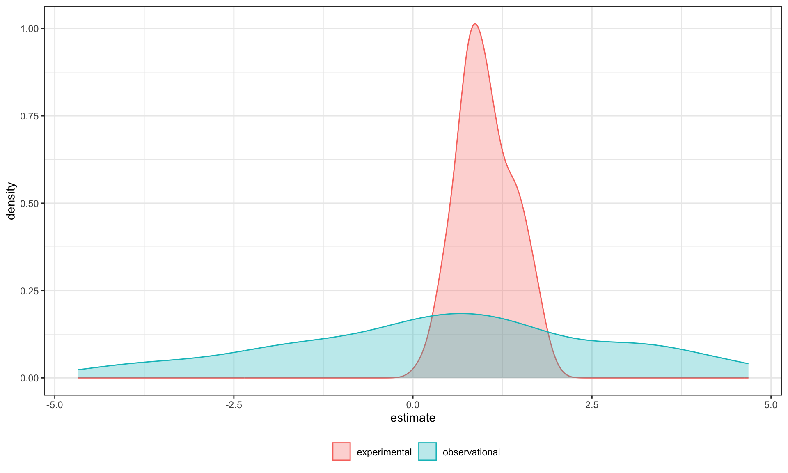

Power & 3-way interactions
Announcements
Download and install LaTex before lab tomorrow.
Homework 3 due next Friday
Power
The likelihood of finding an effect if the effect actually exists. Power gets larger as we:
- increase our sample size
- reduce (error) variance
- raise our Type I error rate
- study larger effects
Power in multiple regression (additive effects)
When calculating power for the omnibus test, use the expected multiple \(R^2\) value to calculate an effect size:
\[\large f^2 = \frac{R^2}{1-R^2}\]
Omnibus power
[1] 0.1111111library(pwr)
pwr.f2.test(u = 3, # number of predictors in the model
f2 = f,
sig.level = .05, #alpha
power =.90) # desired power
Multiple regression power calculation
u = 3
v = 127.5235
f2 = 0.1111111
sig.level = 0.05
power = 0.9v is the denominator df of freedom, so the number of participants needed is v + p + 1.
Coefficient power
To estimate power for a single coefficient, you need to consider (1) how much variance is accounted for by just the variable and (2) how much variance you’ll account for in Y overall.
\[\large f^2 = \frac{R^2_Y-R^2_{Y.X}}{1-R_Y^2}\]
Coefficient power
[1] 0.07777778pwr.f2.test(u = 3, # number of predictors in the model
f2 = f,
sig.level = .05, #alpha
power =.90) # desired power
Multiple regression power calculation
u = 3
v = 182.1634
f2 = 0.07777778
sig.level = 0.05
power = 0.9v is the denominator df of freedom, so the number of participants needed is v + p + 1.
Effect sizes (interactions)
To start our discussion on powering interaction terms, we need to first consider the effect size of an interaction.
How big can we reasonably expect an interaction to be?
Interactions are always partialled effects
that is, we examine the relationship between the product of variables X and Z only after we have controlled for X and controlled for Z.
Think of XZ as a new variable (W). In any other regression model, what would we be concerned about in terms of our predictors?
McClelland and Judd (1993)
Is it more difficult to find interaction effects in experimental studies or observational studies?
What factors make it relatively easier to find interactions in experimental work?
Factors influencing power in experimental studies
No measurement error of IV
don’t have to guess what condition a participant is in
measurement error is exacerbated when two variables measured with error are multiplied by each other
Studies with experimental designs are more likely to yield cross-over interactions; observational studies may be restricted to fan interactions
- cross-over interactions are easier to detect than fan interactions
Factors influencing power in experimental studies
Researchers can concentrate scores on extreme ends on both X and Z.
increases variability in both X and Z, and in XZ
in observational studies, data tends to cluster around the mean
Researchers can also force orthogonality in X and Z.
Researchers can study the full range of X in an experiment.
McClelland and Judd’s simulation
“For the experiment simulations, we used 2 X 2 factorial designs, with values of X and Z equal to +1 and —1 and an equal number of observations at each of the four combinations of X and Z values.”
McClelland and Judd’s simulation
“For the field study simulations, we used values of X and Z that varied between the extreme values of +1 and —1. …values of X and Z were each sampled independently from a normal distribution with a mean of 0 and a standard deviation of 0.5. Values of X and Z were rounded to create equally spaced 9-point scales ranging from -1 to +1.”
sim_con = function(n){
x = rnorm(n, mean = 0, sd = .5) # simulate from distribution
outside_range = which(x > 1 | x < -1) # identify values outside range
# if at least one outside range, do this
while(length(outside_range) > 0){
# simulate just for values outside range
x[outside_range] = rnorm(length(outside_range), 0, .5)
outside_range = which(x > 1 | x < -1) # check
}
# convert to 9 point scale
rounded = plyr::round_any(x, accuracy = .25)
return(rounded) # output of function
}McClelland and Judd’s simulation
“For the field study simulations, we used values of X and Z that varied between the extreme values of +1 and —1. …values of X and Z were each sampled independently from a normal distribution with a mean of 0 and a standard deviation of 0.5. Values of X and Z were rounded to create equally spaced 9-point scales ranging from -1 to +1.”
For the simulations of both the field studies and the experiments, \(\beta_0 = 0, \beta_X=\beta_Z=\beta_{XZ} = 1.\) There were 100 observations, and errors for the model were sampled from the same normal distribution with a mean of 0 and a standard deviation of 4.
Call:
lm(formula = Y ~ X * Z)
Residuals:
Min 1Q Median 3Q Max
-11.5852 -2.3361 0.0421 2.4987 12.6863
Coefficients:
Estimate Std. Error t value Pr(>|t|)
(Intercept) 0.8532 0.4322 1.974 0.0512 .
X -0.8926 0.9387 -0.951 0.3441
Z -0.1403 1.0104 -0.139 0.8899
X:Z 3.2863 2.2175 1.482 0.1416
---
Signif. codes: 0 '***' 0.001 '**' 0.01 '*' 0.05 '.' 0.1 ' ' 1
Residual standard error: 4.271 on 96 degrees of freedom
Multiple R-squared: 0.03114, Adjusted R-squared: 0.0008583
F-statistic: 1.028 on 3 and 96 DF, p-value: 0.3836From 100 simulations each…
# for experimental studies
ebeta_xz = numeric(length = N)
et_xz = numeric(length = N)
for(i in 1:sim){
# simulate data
X = rep(c(-1,1), each = N/2)
Z = rep(c(-1,1), times = N/2)
Y = 0 + 1*X + 1*Z + 1*X*Z +
rnorm(n = N, mean = 0, sd = 4)
#run model
model = lm(Y ~ X*Z)
coef = coef(summary(model))
#extract coefficients
beta = coef["X:Z", "Estimate"]
t_val = coef["X:Z", "t value"]
#save to vectors
ebeta_xz[i] = beta
et_xz[i] = t_val
}# for observational studies
obeta_xz = numeric(length = N)
ot_xz = numeric(length = N)
for(i in 1:sim){
# simulate data
X = sim_con(N)
Z = sim_con(N)
Y = 0 + 1*X + 1*Z + 1*X*Z +
rnorm(n = N, mean = 0, sd = 4)
#run model
model = lm(Y ~ X*Z)
coef = coef(summary(model))
#extract coefficients
beta = coef["X:Z", "Estimate"]
t_val = coef["X:Z", "t value"]
#save to vectors
obeta_xz[i] = beta
ot_xz[i] = t_val
}… estimates of the model parameter \(\beta_{XZ}\) the moderator or interaction effect equaled 0.977 and 0.979 for the field studies and experiments, respectively.
Code

… estimates of the model parameter \(\beta_{XZ}\) the moderator or interaction effect equaled 0.977 and 0.979 for the field studies and experiments, respectively.
Code
data.frame(sim = rep(c("experimental", "observational"), each = 100),
t_val = c(et_xz, ot_xz)) %>%
ggplot(aes(x = t_val)) +
geom_density(aes(fill = sim, color = sim), alpha = .3) +
geom_vline(aes(xintercept = qt(p = .975, df = 100-3-1)))+
scale_x_continuous("t statistic") +
scale_color_discrete("") + scale_fill_discrete("")+
theme_bw() + theme(legend.position = "bottom")
[1] 66[1] 2In our simulation, 66% of experimental studies were statistically significant, whereas only 2% of observational studies were significant. Remember, we built our simulation based on data where there really is an interaction effect (i.e., the null is false).
McClelland and Judd found that 74% of experimental studies and 9% of observational studies were significant.
Efficiency

Efficiency
If the optimal design has N obserations, then to have the same standard error (i.e., the same power), any other design needs to have N*(1/efficency).

So a design with .06 efficency needs \(\frac{1}{.06} = 16.67\) times the sample size to detect the effect.
Coincidentally, this is the same ratio needed for powering interactions compared to main effects.
Observational studies: What NOT to do
Recode X and Z into more extreme values (e.g., median splits).
- While this increases variance in X and Z, it also increases measurement error.
Collect a random sample and then only perform analyses on the subsample with extreme values
- Reduces sample size and also generalizability.
What can be done?
M&J suggest oversampling extremes and using weighted and unweighted samples.
Experimental studies: What NOT to do
Forget about lack of external validity and generalizability.
Ignore power when comparing interaction between covariate and experimental predictors (ANCOVA or multiple regression with categorical and continuous predictors).
Three-way interactions and beyond
Three-way interactions (regression)
Regression equation
\[\hat{Y} = b_{0} + b_{1}X + b_{2}Z + b_{3}W + b_{4}XZ + b_{5}XW \] \[ + b_{6}ZW + b_{7}XZW\]
The three-way interaction qualifies the three main effects (and any two-way interactions).
Like a two-way interaction, the three-way interaction is a conditional effect. And it is symmetrical, meaning there are several equally correct ways of interpreting it.
Factorial ANOVA
We describe the factorial ANOVA design by the number of levels of each factor. “X by Z by W” (e.g., 2 by 3 by 4, or 2x3x4)
A two-way (A x B) interaction means that the magnitude of one main effect (e.g., A main effect) depends on levels of the other variable (B). But, it is equally correct to say that the magnitude of the B main effect depends on levels of A. In regression, we refer to these as [conditional effects] and in ANOVA, they are called simple main effects.
A three-way interaction means that the magnitude of one two-way interaction (e.g., A x B) depends on levels of the remaining variable (C).
It is equally correct to say that the magnitude of the A x C interaction depend on levels of B. Or, that the magnitude of the B x C interaction depends on levels of A. These are known as simple interaction effects.
Example (regression)
stress_data = read.csv(here::here("data/stress2.csv"))
# necessary for simple_slopes() function later
stress_data$class = as.factor(stress_data$class)
#always check your data!
psych::describe(stress_data, fast = T) vars n mean sd min max range se
X 1 150 75.50 43.45 1 150 149 3.55
class 2 150 NaN NA Inf -Inf -Inf NA
bad_day 3 150 2.95 1.29 1 5 4 0.11
talk 4 150 2.57 1.20 1 5 4 0.10
stress 5 150 30.15 10.00 1 51 50 0.82
freshman senior
83 67
Call:
lm(formula = stress ~ bad_day * talk * class, data = stress_data)
Residuals:
Min 1Q Median 3Q Max
-10.6126 -3.2974 0.0671 3.1129 10.7774
Coefficients:
Estimate Std. Error t value Pr(>|t|)
(Intercept) 20.2350 3.5643 5.677 0.0000000745 ***
bad_day 2.4029 1.1284 2.129 0.0349 *
talk 4.4668 1.8595 2.402 0.0176 *
classsenior 0.1035 5.7548 0.018 0.9857
bad_day:talk 0.1041 0.5744 0.181 0.8565
bad_day:classsenior 0.1244 2.0069 0.062 0.9507
talk:classsenior -1.9797 2.2823 -0.867 0.3872
bad_day:talk:classsenior -1.5260 0.7336 -2.080 0.0393 *
---
Signif. codes: 0 '***' 0.001 '**' 0.01 '*' 0.05 '.' 0.1 ' ' 1
Residual standard error: 4.733 on 142 degrees of freedom
Multiple R-squared: 0.7865, Adjusted R-squared: 0.776
F-statistic: 74.72 on 7 and 142 DF, p-value: < 0.00000000000000022# choose levels of the moderator to test
mylist = list(class = c("freshman", "senior"),
talk = c(1.4, 2.6, 3.8))
emtrends(mod_stress,
var = "bad_day",
~talk*class,
at = mylist) talk class bad_day.trend SE df lower.CL upper.CL
1.4 freshman 2.549 0.494 142 1.572 3.5250
2.6 freshman 2.673 0.625 142 1.437 3.9095
3.8 freshman 2.798 1.220 142 0.387 5.2099
1.4 senior 0.537 1.058 142 -1.556 2.6287
2.6 senior -1.170 0.608 142 -2.371 0.0314
3.8 senior -2.876 0.467 142 -3.800 -1.9527
Confidence level used: 0.95 As a reminder, centering will change all but the highest-order terms in a model.
# A tibble: 8 × 5
term estimate std.error statistic p.value
<chr> <dbl> <dbl> <dbl> <dbl>
1 (Intercept) 20.2 3.56 5.68 0.0000000745
2 bad_day 2.40 1.13 2.13 0.0349
3 talk 4.47 1.86 2.40 0.0176
4 classsenior 0.104 5.75 0.0180 0.986
5 bad_day:talk 0.104 0.574 0.181 0.856
6 bad_day:classsenior 0.124 2.01 0.0620 0.951
7 talk:classsenior -1.98 2.28 -0.867 0.387
8 bad_day:talk:classsenior -1.53 0.734 -2.08 0.0393 # A tibble: 8 × 5
term estimate std.error statistic p.value
<chr> <dbl> <dbl> <dbl> <dbl>
1 (Intercept) 39.6 0.702 56.4 4.45e-99
2 bad_day 2.67 0.612 4.37 2.43e- 5
3 talk 4.77 0.646 7.39 1.18e-11
4 classsenior -16.2 1.10 -14.7 2.20e-30
5 bad_day:talk 0.104 0.574 0.181 8.56e- 1
6 bad_day:classsenior -3.79 0.870 -4.36 2.47e- 5
7 talk:classsenior -6.49 0.882 -7.36 1.38e-11
8 bad_day:talk:classsenior -1.53 0.734 -2.08 3.93e- 2Four-way?
\[ \begin{aligned} \hat{Y} &= b_0 + b_1X + b_{2}Z + b_{3}W + b_{4}Q + b_{5}XW\\ &+ b_{6}ZW + b_{7}XZ + b_{8}QX + b_{9}QZ + b_{10}QW\\ &+ b_{11}XZQ + b_{12}XZW + b_{13}XWQ + b_{14}ZWQ + b_{15}XZWQ\\ \end{aligned} \]
3-way (and higher) interactions are incredibly difficult to interpret, in part because they represent incredibly complex processes.
If you have a solid theoretical rationale for conducting a 3-way interaction, be sure you’ve collected enough subjects to power your test (see above).
Especially with small samples, three-way interactions may be the result of a few outliers skewing a regression line. If you have stumbled upon a three-way interaction during exploratory analyses, be careful. This is far more likely to be a result of over-fitting than uncovering a true underlying process.
Best practice for 3-way (and higher) interactions is to use at least one nominal moderator (ideally with only 2 levels), instead of all continuous moderators. This allows you to examine the 2-way interaction at each level of the nominal moderator.
Even better if one of these moderators is experimenter manipulated, which increases the likelihood of balanced conditions.
Next time…
Polynomials and bootstrapping